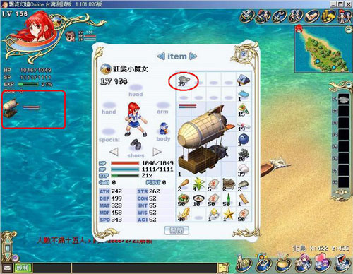

交通工具资料
| 交通工具可以使用替代燃料说明： 新增可制作燃料物品功能，在制作出来以后，可以替代交通工具的损耗度，每一种交通工具都会有指定的消耗燃料，在交通工具已经携带在身上，且将制作出的燃料也携带在身上，要搭乘交通工具的时候就双点该燃料，在原本交通工具的耗损状况红色bar条下，会多一条蓝色的bar条，此蓝色的bar条就是可替代原交通工具耐久度的燃料耗损量。只要此蓝色的bar条尚未耗尽，交通工具就不会继续损坏，而且如果玩家身上携带多量的替用燃料，就可以不断的补充，安心的进行航海大业了。在此要提醒玩家的是，燃料并不会回复交通工具的耐久度，所以身上如果没有携带燃料的话，就会马上造成您的交通工具的损耗��。 另外，蓝色的 bar 条最大值(MAX值)，将等于该交通工具的最大耐用值，当蓝色的bar条增加到最大的时候就无法再往上，请各位玩家多多斟酌使用。（比照 使用补品回复Hp或Sp的方式） | |||||||||||||||||||||||||||||||||||||||||||||||||||||||||||||||||||||||||||||||||||||||||||||||||||||||||||||||||||||||||||||||||||||||||||||||||||||||||||||||||||||||||||||||||||||||
|
交通工具大全:
特殊功能：飞碟可在各城市瞬间移动，机械人遇敌每回合恢复HP和SP 交通工具燃料大全:
|
|  |
| 身上只要有放置对应的燃料，双击使用后，就会先耗损燃料而不会影响交通工具喔。 |